|
Ju O Kim I'm an AI Research Engineer at JS SYSTEM's R&D Division, where I develop distributed AutoML platforms and AI-powered acoustic vision systems for manufacturing applications. I received my Master of Engineering in Computer Engineering (AI) from Keimyung University in 2025, where I was advised by Prof. Deokwoo Lee. My research interests include signal processing, sensor fusion, computer vision, and deep learning, with emphasis on extracting patterns from multi-modal sensor data such as radar, thermal imaging, and acoustic signals. Email / CV / Google Scholar / LinkedIn / Github |

|
Education
Master of Engineering in Computer Engineering (Artificial Intelligence)
Bachelor of Engineering in Computer Engineering |
Experience
AI Research Engineer, R&D Division (Sole AI Specialist)
Research Intern
|
Technical Skills
Deep Learning: PyTorch, TensorFlow, CNN, LSTM, Attention, Transformer, YOLOv8/v11 Familiar with: Prometheus, Grafana |
PublicationsMy research focuses on signal processing, sensor fusion, and deep learning for extracting patterns from multi-modal sensor data. I work on UWB radar respiratory monitoring, thermal camera calibration, and AI-powered sensing systems. The most recent publication is highlighted. |
|
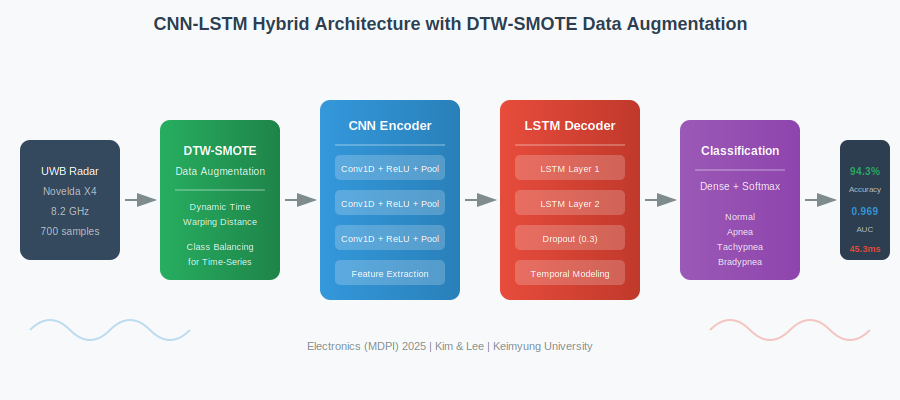
|
Overcoming Data Scarcity in Non-Contact Respiratory Monitoring: A DTW-Enhanced CNN-LSTM Approach
Ju O Kim, Deokwoo Lee Electronics (MDPI)SCIE, 2025 project page / paper / bibtex CNN-LSTM hybrid architecture with DTW-based SMOTE-TS data augmentation for UWB radar respiratory monitoring. Achieves 94.3% accuracy, 0.969 AUC, and 45.3ms inference on Novelda X4 radar data from 700 recordings across 7 volunteers. |
|
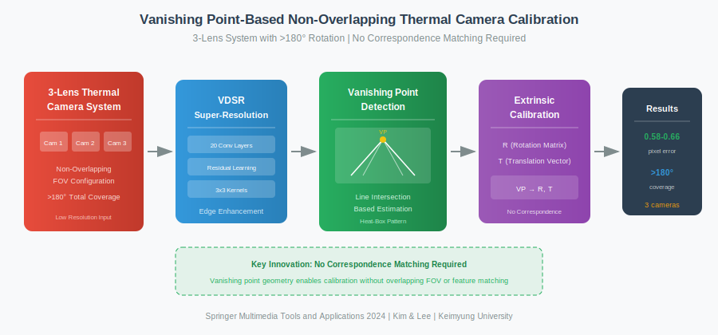
|
Calibrating a Three-Viewpoints Thermal Camera with Few Correspondences
Ju O Kim, Jieun Kim, Deokwoo Lee Journal of Signal Processing Systems (Springer)SCI, 2024 project page / paper / bibtex Vanishing point-based calibration for non-overlapping 3-lens thermal camera (>180° rotation). Uses VDSR super-resolution for low-quality thermal images, achieving 0.58-0.66 pixel reprojection error without correspondence matching. |
|
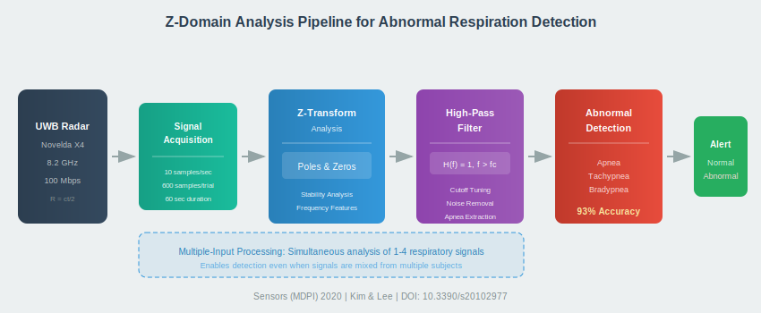
|
Detection of Abnormal Respiration from Multiple-Input Respiratory Signals
Ju O Kim, Deokwoo Lee SENSORS (MDPI)SCIE, 2020 project page / paper / bibtex Z-domain pole-zero analysis with high-pass filtering for apnea detection from UWB radar (Novelda X4, 8.2 GHz). Achieves 93% accuracy with multiple-input signals, detecting abnormal respiration through frequency-domain feature extraction. |
|
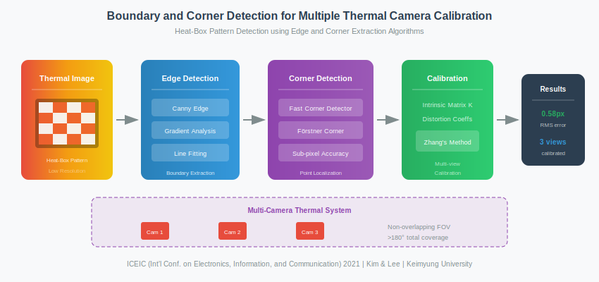
|
Mathematical Model for a Calibration of Multiple-View Thermal Camera
Ju O Kim, Deokwoo Lee ICEIC 2021 (IEEE)Conf, 2021 project page / paper / bibtex We establish a mathematical model for multi-view thermal camera calibration using shared geometric constraints. |
|
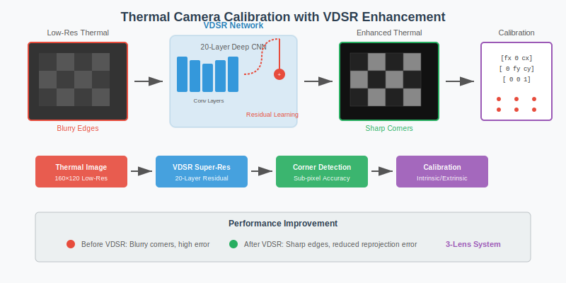
|
Calibration of Thermal Camera with Enhanced Image
Ju O Kim, Deokwoo Lee Journal of the Korea Academia-Industrial cooperation Society (JKAIS)KCI, 2021 project page / paper / bibtex VDSR (Very Deep Super-Resolution) neural network for thermal image enhancement prior to calibration. 20-layer residual network improves checkerboard corner detection and reduces reprojection error in 3-lens thermal camera systems. |
|
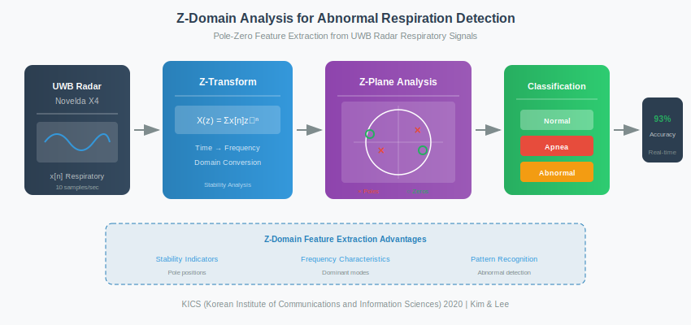
|
Classification of Respiratory States Based on Signal Analysis in Z-Domain
Ju O Kim, Deokwoo Lee The Journal of the Korean Institute of Communications and Information Sciences (KICS)KCI, 2020 project page / paper / bibtex Z-transform based respiratory classification using pole-zero analysis. Achieves 85.1% accuracy for normal respiration and 89.4% for abnormal respiration detection through frequency-domain signal characteristics. |
|
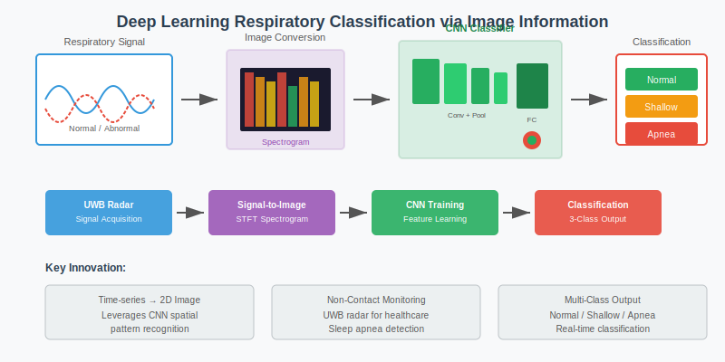
|
Classification of Respiration Signal based on Image Information using Deep Learning
Ju O Kim, Deokwoo Lee Journal of the Korea Academia-Industrial cooperation Society (KAIS)KCI, 2020 paper / bibtex Deep learning-based respiratory signal classification using image representation of time-series data. Converts respiratory waveforms to spectrograms for CNN-based pattern recognition. |
|
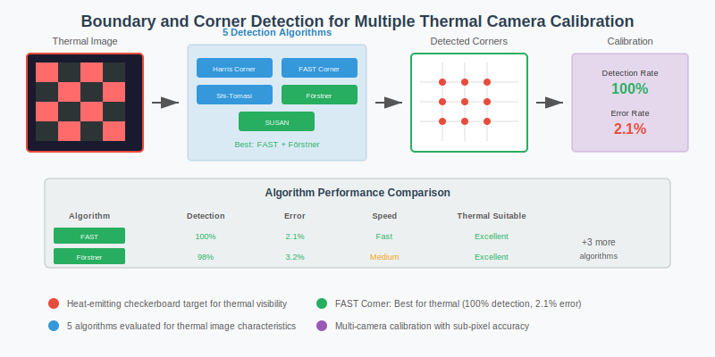
|
Detecting Boundaries and Corner for Calibration of Multiple Thermal Camera
Ju O Kim, Deokwoo Lee The Transactions of the Korean Institute of Electrical EngineersKCI, 2020 project page / paper / bibtex Evaluates 5 corner detection algorithms for thermal checkerboard calibration. Fast Corner Detector achieves 100% detection rate with only 2.1% error rate, selected along with Förstner Corner Detector for optimal thermal camera calibration. |
|
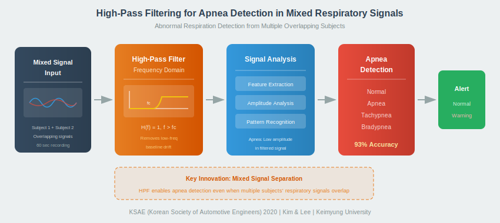
|
Detection of abnormal respiration status from mixed signals using high pass filter
Ju O Kim, Deokwoo Lee Transactions of KSAEConf, 2020 project page / paper / bibtex High-pass filter with varying cutoff frequencies (30-300 Hz) for detecting abnormal respiration in mixed signals from two simultaneous subjects. Enables apnea detection when respiratory signals are linearly combined. |
|
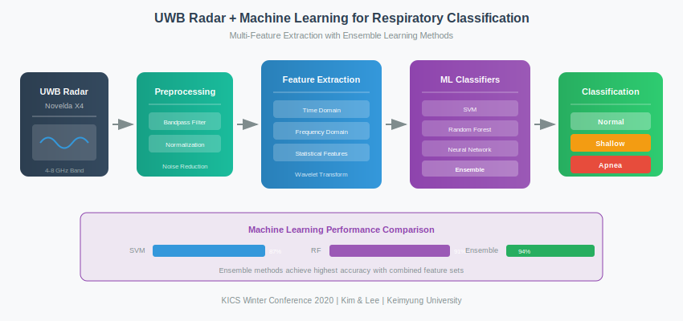
|
Classification of Respiratory Status using UWB Radar based on a Learning Algorithm
Ju O Kim, Deokwoo Lee, Cheol-Hyeong Park Proceedings of the KICS Winter ConferenceConf, 2020 project page / paper / bibtex Logistic regression-based respiratory classification using UWB radar features. Evaluates machine learning approaches for non-contact breathing pattern recognition with 53% accuracy at 4000 training epochs. |
|
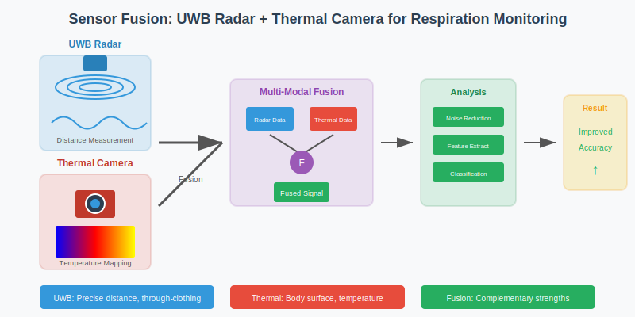
|
Accuracy Improvement of Non-contact Respiration Measurement through Sensor Fusion of UWB Radar and Thermal Camera
Ju O Kim, Deokwoo Lee KICS Summer ConferenceConf, 2020 bibtex Multi-modal sensor fusion combining UWB radar distance measurements with thermal camera imaging for improved non-contact respiratory monitoring accuracy. |

|
Edge and Corner Detection for Multiple Thermal Camera Calibration
Ju O Kim, Deokwoo Lee ICROS Annual ConferenceConf, 2020 bibtex Optimized edge and corner detection algorithms for thermal checkerboard images enabling accurate multi-view thermal camera calibration. |
|
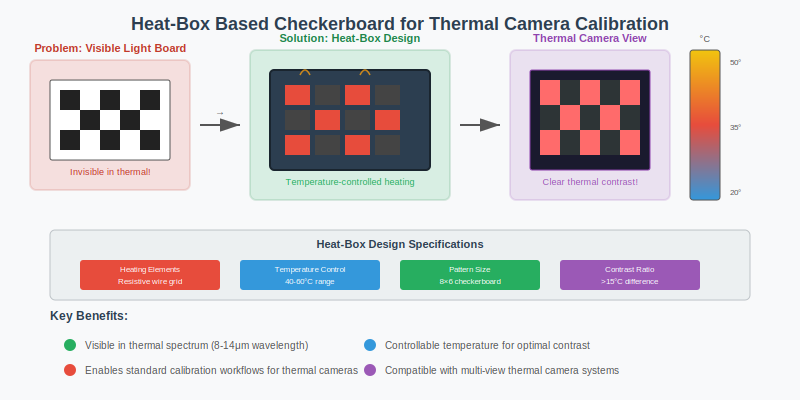
|
Production of Heat-Box based Checkerboard for Thermal Camera Calibration
Ju O Kim, Deokwoo Lee IEIE Summer ConferenceConf, 2020 bibtex Design and fabrication of heat-emitting checkerboard calibration target for thermal camera systems, enabling temperature-controlled feature visibility. |
|
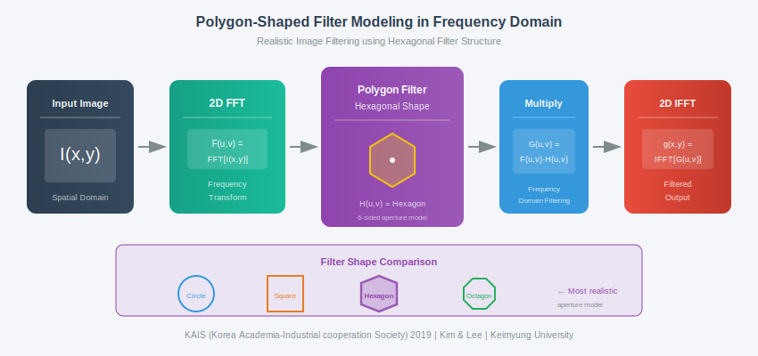
|
Polygon-shaped Filters in Frequency Domain for Practical Filtering of Images
Ju O Kim, Ji Su Kim, Cheol Hyeong Park, Deokwoo Lee Journal of the Korea Academia-Industrial cooperation Society (KAIS)KCI, 2019 project page / paper / bibtex Hexagonal filter design inspired by wireless cellular frequency reuse. Mathematical modeling of N-polygon filters for 2D image processing, achieving competitive PSNR compared to circular ideal filters while eliminating spectral leakage. |
|
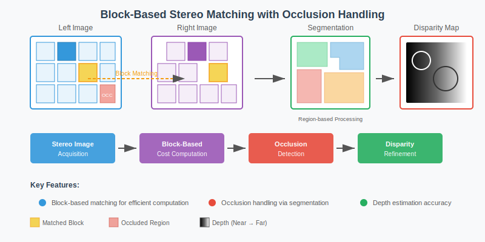
|
Occlusion Handled Block-Based Stereo Matching with Image Segmentation
Ji Su Kim, Cheol Hyeong Park, Ju O Kim, Deokwoo Lee International Journal of Advanced Smart Convergence (IJASC)KCI, 2019 paper / bibtex Block-based stereo matching algorithm with image segmentation for handling occlusion regions, improving depth estimation accuracy in challenging scenes. |
|
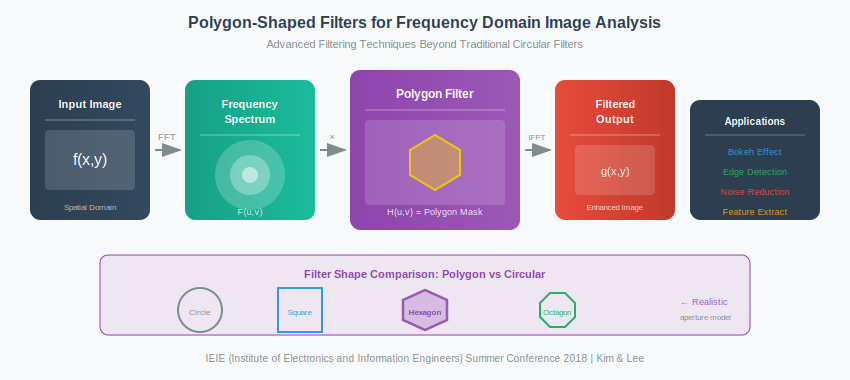
|
Polygon-shaped Filters for Analysis of Images in Frequency Domain
Ju O Kim, Ji-Su Kim, Cheol-Hyeong Park, Deokwoo Lee Proceedings of the IEIE ConferenceConf, 2018 project page / paper / bibtex Analysis of polygon-shaped frequency domain filters for image processing applications. |
|
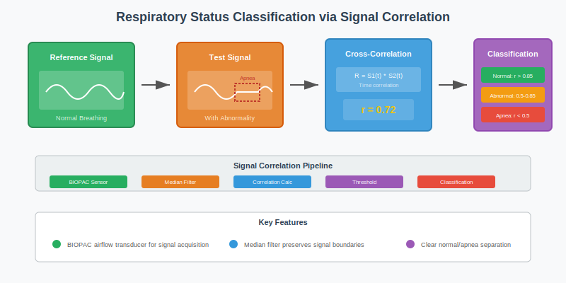
|
Application to Detection and Classification of Respiratory Status based on a Signal Correlation
Su-Yeol Kim, Chae-Hwan Hwang, Ju O Kim, Cheol-Hyeong Park, Deokwoo Lee Proceedings of the IEIE ConferenceConf, 2018 project page / paper / bibtex Cross-correlation based respiratory classification using BIOPAC airflow transducer. Median filter preprocessing preserves signal boundaries while removing noise, achieving clear separation between normal and apnea states. |
|
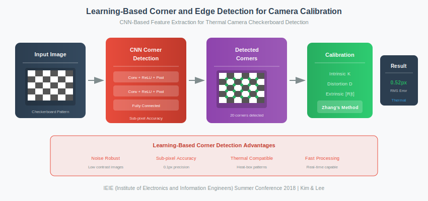
|
Application to Camera Calibration using Learning Based Corner and Edge Detection
Cheol-Hyeong Park, Ji-Su Kim, Ju O Kim, Deokwoo Lee Proceedings of the IEIE ConferenceConf, 2018 project page / paper / bibtex Deep learning-based corner detection for camera calibration using chess image training data. Reduces re-projection error from 2.36 (Zhang's method) to 1.13 pixels with only a single pair of checkerboard images. |
ProjectsI develop AI systems for manufacturing, computer vision, and signal processing applications. These projects demonstrate end-to-end ML system design, production deployment, and integration with industrial workflows. |

|
VisionForge - AI Vision Platform
Research Prototype | Industrial Inspection project page AI vision platform for PCB inspection with IPC-A-610 compliant defect categories. Combines Stable Diffusion for data augmentation and NeRF 3D reconstruction. Tech: PyTorch, FastAPI, YOLOv8, Stable Diffusion, NeRF |

|
APEX-ML - AutoML Platform
Internal Tool | GPU-Accelerated AutoML project page AutoML platform with 6 algorithm families and 3-phase pipeline (Rapid Screening → Bayesian Optimization → Evolutionary Ensemble). Reduces model development time by 80%+ (weeks to days) with 60-80% GPU utilization. Tech: PyTorch, XGBoost, Optuna, Ray, FastAPI |

|
Industrial NeRF Factory
Research Prototype | Manufacturing AI project page End-to-end manufacturing AI platform integrating NeRF for synthetic data generation and digital twin simulation. Enables sim-to-real transfer from data collection to deployment. Tech: NeRF, PyTorch, Ray, ROS 2, FastAPI |

|
Acoustic Vision System (AVS)
Research Prototype | Multimodal Anomaly Detection project page Acoustic camera platform combining MVDR beamforming with computer vision for industrial machinery monitoring. Evaluated on DCASE 2020 Task 2 benchmark with comprehensive test coverage. Tech: PyTorch, Audio Spectrogram Transformer, YOLOv8, librosa |

|
ITS AI XAI
Internal Tool | Explainable PCB Defect Detection project page AI-powered PCB defect detection with multimodal fusion (603 sensor features + computer vision) and SHAP-based explainability. Achieves 94.62% F1-score with 67.3ms latency. Tech: XGBoost, YOLOv11, SHAP, FastAPI, Streamlit |

|
AI Digital Twin Factory System
Research Prototype | Smart Manufacturing project page Integrated software architecture combining vision AI, digital twin simulation, predictive maintenance, and production scheduling for smart manufacturing. Tech: Python, React, PyTorch, FastAPI, Docker |

|
THN AI Production Scheduler
Internal Tool | Production Planning project page AI-powered production scheduling system for manufacturing optimization. Implements multi-objective optimization for resource allocation and workflow management. Tech: Python, Optimization Algorithms, ALNS |
|
Design and source code from Jon Barron's website |